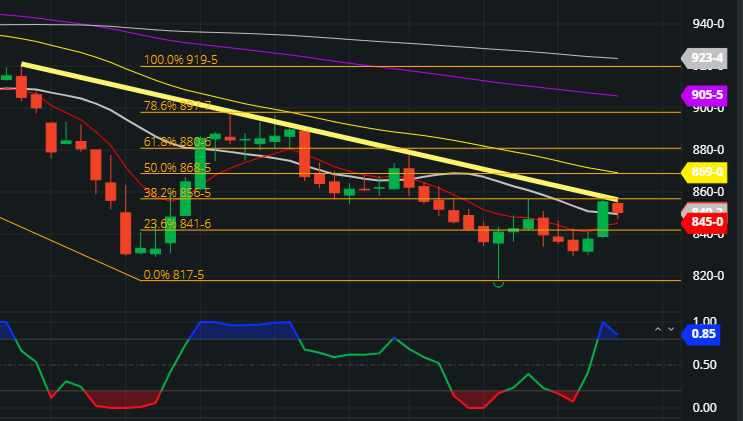

Beginners Guide to I.P.O.|Dividends|Why a Share Rises Or Falls?
26.9.2021-Stocks,I.P.O.,DividendsIntrigued by the world of finance ? Here is a blog which can easily get you through all the terms and the basic fundas of finance , I.P.O. or Dividends what are they ? Why does a share rises or falls ? Dont scratch your heads just read the blog.
I.P.O.(Initial Public Offering)
The easiest way to define an IPO or initial public offering is: owners sell pieces of a private business to the public as a new stock offering.The initial public offering allows the company to raise funds from public investors.The transition from private to public allows private investors to realize gains from their private company’s initial investments.The reasons for a company to go from private to public are a few. The first and primary reason is to raise money. By selling shares on the open market, the company can raise funds to grow the company.There are also benefits for early investors or founders to cash out of their initial investment in the company. The IPO process generally raises funds exceeding the money the founders have put into the company and allows them to exit with a profit.
Dividends
A dividend is a share of profits and retained earnings that a company pays out to its shareholders. When a company generates a profit and accumulates retained earnings, those earnings can be either reinvested in the business or paid out to shareholders as a dividend. The annual dividend per share divided by the share price is the dividend yield.
Why a Share Rises Or Falls?
If the supply of a particular company’s share is more than the demand in the stock market, it will sell at a lower price. The demand for a share is determined by several factors most of which are related to the yield from the share. If a company pays 15% on its equity shares whereas the general expectation about the return in the industry is only 10%, such a share will attract a large number of buyers.